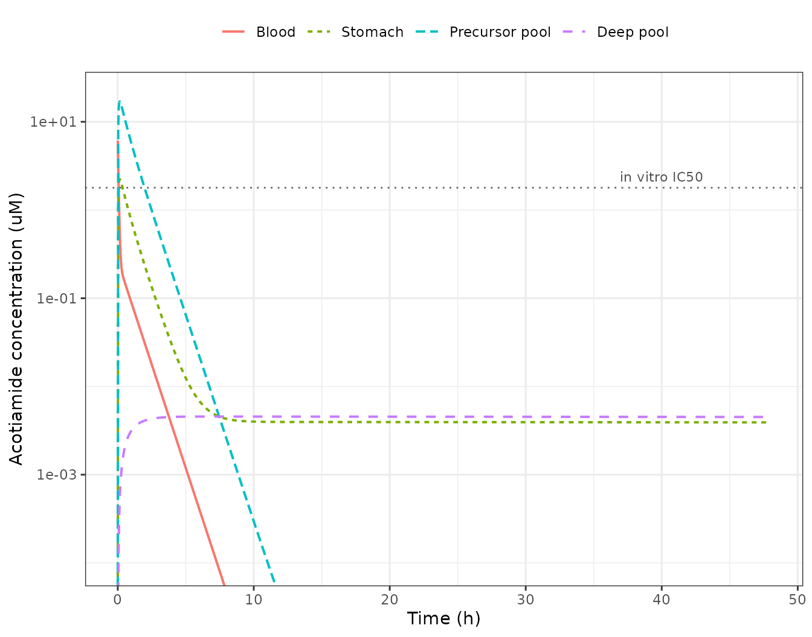
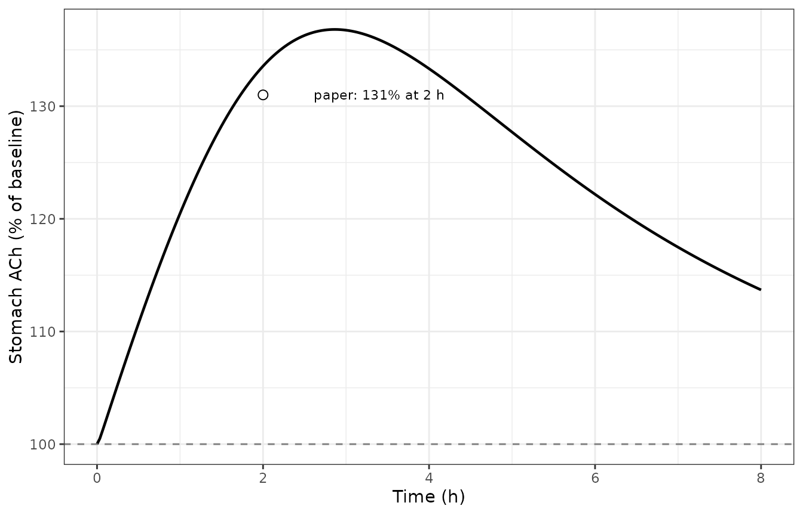

Acotiamide gastric PBPK/PD, rat (Yoshii 2016)
Source:vignettes/articles/Yoshii_2016_acotiamide_rat_pbpk.Rmd
Yoshii_2016_acotiamide_rat_pbpk.RmdModel and source
- Citation: Yoshii K, Iikura M, Hirayama M, Toda R, Kawabata Y. Physiologically-based pharmacokinetic and pharmacodynamic modeling for the inhibition of acetylcholinesterase by acotiamide, a novel gastroprokinetic agent for the treatment of functional dyspepsia, in rat stomach. Pharmaceutical Research. 2016;33(2):292-298. doi:10.1007/s11095-015-1787-y.
- Article: https://doi.org/10.1007/s11095-015-1787-y
Acotiamide is a gastroprokinetic agent for functional dyspepsia that works by inhibiting acetylcholinesterase (AChE), so that acetylcholine (ACh) persists longer at the gastric neuromuscular junction. Yoshii and colleagues ask a question that most PK models never pose: which concentration in the target organ actually drives the effect. Whole-stomach homogenate concentration is what an experiment can measure, but it averages over spaces the drug reaches at very different rates. The paper resolves the stomach into three serial spaces, fits them to blood and stomach data, and then shows that the ACh response is explained by the concentration in one of them – the precursor pool – and not by blood or by whole-stomach concentration.
mod <- rxode2::rxode(readModelDb("Yoshii_2016_acotiamide_rat_pbpk"))Population
| Field | Value |
|---|---|
| Species | rat (male Sprague-Dawley) |
| N | 66 rats across six experiments (6 per time point) |
| Age | 6 to 7 weeks |
| Dose | Acotiamide 1.85 umol/kg, single IV bolus (femoral vein) |
| Sampling | Blood and stomach 5, 10, 15, 30 min and 1, 2, 4, 6, 8, 24, 48 h; stomach ACh 5 min to 4 h |
| Region | Japan (Zeria Pharmaceutical Co., Ltd, Saitama) |
The model was fitted to group mean profiles (each point is the mean of six rats), not to individual animals, which is why the paper reports no between-subject variability and no residual-error magnitude. Fitting was done in the Phoenix model of WinNonlin 6.1.
Measured plasma concentrations were converted to
blood concentrations before fitting, via
Ca = Cp * Rbp with Rbp = 0.84 (source paper
Eq. 1). That is a data-handling step applied ahead of the fit, so it is
deliberately not part of the packaged model:
Cc here is a blood concentration. A user who wants plasma
should divide by 0.84.
Structural model
| Compartment | Paper symbol | Role |
|---|---|---|
| central / peripheral1 | V1, C1 | Blood disposition; biexponential (Eq. 2) |
| stomach_vascular | Ve, Ce | Gastric vascular space, perfused at Qt |
| stomach_precursor | VT, CT | Precursor pool; drug unbound here, and this is the AChE driver |
| stomach_deep | Vd, Cd | Deep pool; non-specific binding to cellular components |
| ach | R | Stomach acetylcholine, indirect response (Eq. 9) |
Three features of this model are worth stating explicitly because they are easy to get wrong when reading it back:
The stomach does not feed back into the blood. Eq. 2 is a closed-form biexponential fitted to the blood data on its own, and it serves as a forcing function for Eqs. 3-5; no stomach term appears in the blood equation. The packaged model writes the blood as a two-compartment ODE rather than the closed form, so that arbitrary dosing works, but the coupling is one-way in exactly the same way.
CLtotalready absorbs whatever the stomach removes.Uptake into the precursor pool is blood-flow independent.
fb*PSinfwas measured independently by integration-plot analysis in the authors’ earlier work, and its being flow-independent is the evidence for a carrier-mediated process rather than passive perfusion-limited distribution.Vstomachin Eq. 8 excludes the vascular space. Figure 2 bracketsVstomach/Cstomacharound the precursor and deep pools only, and the excised stomachs were rinsed with blood removed before assay.
The three stomach spaces are declared through the documented
paper_specific_compartments escape hatch rather than mapped
onto the canonical is_ / int_ /
bound_ PBPK sub-compartment prefixes, because the authors
explicitly decline the anatomical reading: “the anatomical meanings of
these compartments remain unclear” (Discussion). The Discussion does
offer candidate identities – Ve resembles the inulin
(extracellular) space, VT matches the 12.0% cytosolic
fraction, the deep pool is suggested to be organelle – but presents them
as hypotheses. bound_<organ> is in any case reserved
for saturable pools, whereas this deep pool is stated to
operate under linear conditions.
Source trace
Every equation and every ini() value, with its location
in the source paper.
| Item | Source | Value |
|---|---|---|
| Plasma-to-blood conversion | Eq. 1 | Ca = Cp * Rbp, Rbp = 0.84 (pre-fit data step; not in model) |
| Blood disposition | Eq. 2 | Biexponential IV-bolus solution; encoded as the equivalent 2-cmt ODE |
| d/dt(stomach_vascular) | Eq. 3 | VedCe/dt = Qt(C1-Ce) - fbPSinfCe + fuPSeffCT |
| d/dt(stomach_precursor) | Eq. 4 | VTdCT/dt = fbPSinfCe + VdCdkdis - fuPSeffCT - VTCT*kass |
| d/dt(stomach_deep) | Eq. 5 | VddCd/dt = VTCTkass - VdCd*kdis (paper prints kass twice; see Errata) |
| v_stomach_deep | Eq. 6 | Vd = VT * kass / kdis |
| v_stomach | Eq. 7 | Vstomach = VT + Vd |
| Cstomach | Eq. 8 | Cstomach = (AT + Ad) / Vstomach |
| d/dt(ach) | Eq. 9 | dR/dt = kin - kout(1 - CT/(IC50 + CT))R |
| lvc (V1) | Table I | 302 mL/kg, by fitting |
| lk12 (k1) | Table I | 0.126 1/min, by fitting |
| lk21 (k2) | Table I | 0.0313 1/min, by fitting |
| lcl (CLtot) | Table I | 56.9 mL/min/kg, by fitting |
| lv_stomach_vascular (Ve) | Table I | 0.441 mL, FIXED (calculated from Vi and tissue weight) |
| lq_stomach (Qt) | Table I | 1.1 mL/min, FIXED (Hosseini-Yeganeh and McLachlan) |
| lclin_stomach (fb*PSinf) | Table I | 0.174 mL/min, FIXED (Yoshii et al. 2011) |
| lv_stomach_precursor (VT) | Table I | 0.133 mL, by fitting |
| lclef_stomach (fu*PSeff) | Table I | 0.00600 mL/min, by fitting |
| lkin_stomach_deep (kass) | Table I | 0.0000320 1/min, by fitting |
| lkout_stomach_deep (kdis) | Table I | 0.00000485 1/min, by fitting |
| lic50 (IC50) | Table I | 1.79 uM, FIXED (in vitro, Fig. 4) |
| lkin (kin) | Table I | 0.00314 nmol/g of tissue/min, by fitting |
| lkout (kout) | Table I | 0.00415 1/min, by fitting |
| Residual error (all 3 outputs) | not reported | fixed(0); paper reports only Loglik / AIC (Table II) |
Table I lists Vstomach = 1.1 mL from the literature as
well. In the model that quantity is derived from Eqs. 6-7
rather than supplied; see Errata.
Simulation setup
DOSE_UMOL_KG <- 1.85 # source paper Methods, In Vivo Study
DOSE <- DOSE_UMOL_KG * 1e3 # nmol/kg, the model's dosing unit
V1 <- 302; K1 <- 0.126; K2 <- 0.0313; CLTOT <- 56.9 # Table I
# The paper's blood / stomach sampling schedule, in minutes.
OBS_MIN <- c(5, 10, 15, 30, 60, 120, 240, 360, 480, 1440, 2880)
# This model declares THREE endpoints (Cc, Cstomach and ach), so rxode2
# requires every observation row to name the endpoint it belongs to; neither a
# bare observation row nor `dvid =` is accepted, and `useLinCmt = FALSE` does
# not change that. Observations are therefore placed on `ach`, which is the one
# endpoint backed directly by a declared ODE state (`d/dt(ach)`) rather than by
# an algebraic observable. That satisfies rxode2 without ever naming an
# algebraic observable as a compartment, which would inject a `cmt` slot.
# rxode2 returns every model variable as a column at those rows regardless, so
# Cc, Cstomach, CT, Cd and Ce all come back from the same solve.
ev_grid <- function(tgrid) {
rxode2::et(amt = DOSE, cmt = "central") |>
rxode2::et(tgrid, cmt = "ach")
}
solve_grid <- function(tgrid, ...) {
rxode2::rxSolve(mod, ev_grid(tgrid), returnType = "data.frame", ...)
}
# Hybrid rate constants of the Eq. 2 biexponential, from the Table I
# micro-constants: alpha + beta = k10 + k1 + k2 and alpha*beta = k10*k2.
k10 <- CLTOT / V1
bsum <- k10 + K1 + K2
ALPHA <- (bsum + sqrt(bsum^2 - 4 * k10 * K2)) / 2
BETA <- (bsum - sqrt(bsum^2 - 4 * k10 * K2)) / 2
eq2 <- function(t) {
DOSE * (ALPHA - K2) / (V1 * (ALPHA - BETA)) * exp(-ALPHA * t) +
DOSE * (K2 - BETA) / (V1 * (ALPHA - BETA)) * exp(-BETA * t)
}
trap <- function(time, y) {
sum(diff(time) * (utils::head(y, -1) + utils::tail(y, -1)) / 2)
}| Quantity | Value |
|---|---|
| alpha (1/min) | 0.3277 |
| beta (1/min) | 0.0180 |
| Distribution t1/2 (min) | 2.1150 |
| Terminal t1/2 (min) | 38.5200 |
| C0 = D/V1 (uM) | 6.1260 |
Gate 1: the ODE reproduces the paper’s closed form
The packaged model writes the blood as a two-compartment ODE; the
paper writes it as the closed-form biexponential of Eq. 2. These must
agree exactly. This is the single most load-bearing check in the
vignette, because it simultaneously tests the dose unit, the compartment
the dose lands in, the CLtot/V1 elimination term and both
micro-constants.
Both sides use the same fixed parameters and there is no random draw anywhere, so the only difference is ODE solver tolerance and the bound can be tight. The solve is run at tightened tolerances for this comparison specifically: by 8 h the concentration is down to about 5e-5 uM, which is only a few orders of magnitude above rxode2’s default absolute tolerance of 1e-8, so at defaults this gate would be measuring the solver’s error floor rather than the model.
g1_t <- OBS_MIN[OBS_MIN <= 480]
g1 <- solve_grid(g1_t, atol = 1e-14, rtol = 1e-12) |>
dplyr::transmute(
time,
ODE = Cc,
`Eq. 2` = eq2(time),
`rel. err` = abs(Cc - eq2(time)) / eq2(time)
)| time | ODE | Eq. 2 | rel. err |
|---|---|---|---|
| 5 | 1.3790000 | 1.3790000 | 0 |
| 10 | 0.4410000 | 0.4410000 | 0 |
| 15 | 0.2439000 | 0.2439000 | 0 |
| 30 | 0.1537000 | 0.1537000 | 0 |
| 60 | 0.0893900 | 0.0893900 | 0 |
| 120 | 0.0303700 | 0.0303700 | 0 |
| 240 | 0.0035040 | 0.0035040 | 0 |
| 360 | 0.0004043 | 0.0004043 | 0 |
| 480 | 0.0000467 | 0.0000467 | 0 |
# Realised 1.4e-10 at tightened tolerances. 1e-6 keeps four orders of headroom
# over that while still going red on any real transcription error: a wrong dose
# unit, a wrong dosing compartment or a swapped k1/k2 all move Cc by percent,
# not by parts per million.
stopifnot(max(g1$`rel. err`) < 1e-6)The comparison is restricted to the first 8 h deliberately. The terminal half-life is 38.5 min, so by the paper’s last blood sample at 48 h the closed form evaluates to about 1e-24 uM – far below any ODE solver’s absolute tolerance and far below any assay. Comparing there would measure floating-point noise, not the model.
Gate 2: the derived stomach volumes
Vd is not an estimated parameter and has no Table I row:
Eq. 6 defines it as the volume that makes kass /
kdis an equilibrium partition, since at equilibrium
VT*CT*kass = Vd*Cd*kdis with CT = Cd.
VT <- 0.133; KASS <- 0.0000320; KDIS <- 0.00000485
p <- solve_grid(c(5, 60))[1, ]
vol <- tibble::tibble(
Quantity = c("Vd = VT*kass/kdis (mL)", "Vstomach = VT + Vd (mL)",
"VT as % of the 1.1 mL anatomical stomach"),
Model = signif(c(p$v_stomach_deep, p$v_stomach, 100 * VT / 1.1), 4),
Expected = signif(c(VT * KASS / KDIS, VT + VT * KASS / KDIS, 12.1), 4)
)| Quantity | Model | Expected |
|---|---|---|
| Vd = VT*kass/kdis (mL) | 0.8775 | 0.8775 |
| Vstomach = VT + Vd (mL) | 1.0110 | 1.0110 |
| VT as % of the 1.1 mL anatomical stomach | 12.0900 | 12.1000 |
The 12.1% figure is the paper’s own: “the volume of precursor pool (VT) which was 12.1% of the volume of stomach (Vstomach) was similar to fraction of acotiamide distributed to the stomach cytosol (12.0%)”.
Gate 3: mass balance across the stomach
The only route in or out of the whole stomach system is the gastric blood flow, so the total stomach amount must equal the time integral of the net perfusion flux:
d/dt(stomach_vascular + stomach_precursor + stomach_deep) = Qt * (C1 - Ce)This is an independent check on Eqs. 3-5 as a set – in particular on
the kdis correction discussed under Errata, since a
kass/kass deep pool would still be mass-conserving but a mis-signed or
mis-paired exchange term would not.
# Fine early, coarser later: essentially all of the trapezoidal error is
# accumulated over the first few minutes, where the perfusion flux spikes and
# then reverses sign as Ce overtakes C1.
mb_t <- sort(unique(c(seq(0, 10, by = 0.005), seq(10, 480, by = 0.05))))
mb <- solve_grid(mb_t) |>
dplyr::mutate(
total = stomach_vascular + stomach_precursor + stomach_deep,
influx = q_stomach * (Cc - Ce)
)
mb_check <- tibble::tibble(
`Time (min)` = c(30, 120, 480),
`Total stomach amount (nmol)` = sapply(c(30, 120, 480), function(tt) {
mb$total[which.min(abs(mb$time - tt))]
}),
`Integral of Qt*(C1-Ce) (nmol)` = sapply(c(30, 120, 480), function(tt) {
k <- mb$time <= tt
trap(mb$time[k], mb$influx[k])
})
) |>
dplyr::mutate(
`abs. err (nmol)` = abs(`Total stomach amount (nmol)` -
`Integral of Qt*(C1-Ce) (nmol)`),
# Normalised against the PEAK stomach content, not against the current
# amount. By 8 h the stomach holds 0.2% of its peak, so dividing by the
# current amount would amplify a fixed integration error into an apparent
# 4% discrepancy that says nothing about mass balance.
`err / peak content` = `abs. err (nmol)` / max(mb$total)
)| Time (min) | Total stomach amount (nmol) | Integral of Qt*(C1-Ce) (nmol) | abs. err (nmol) | err / peak content |
|---|---|---|---|---|
| 30 | 1.555000 | 1.555000 | 4.01e-05 | 1.52e-05 |
| 120 | 0.249000 | 0.249000 | 4.00e-05 | 1.51e-05 |
| 480 | 0.004361 | 0.004401 | 3.99e-05 | 1.51e-05 |
Reproducing Figure 3: acotiamide in blood and stomach
Figure 3 plots the observed blood and whole-stomach concentrations together with the model’s blood, stomach, precursor-pool and deep-pool curves.
prof <- solve_grid(sort(unique(c(seq(0, 2880, by = 2), OBS_MIN))))
long <- prof |>
dplyr::select(time, Blood = Cc, Stomach = Cstomach,
`Precursor pool` = CT, `Deep pool` = Cd) |>
tidyr::pivot_longer(-time, names_to = "Space", values_to = "conc") |>
dplyr::mutate(
Space = factor(Space,
levels = c("Blood", "Stomach", "Precursor pool", "Deep pool"))
)#> Warning in ggplot2::scale_y_log10(): log-10 transformation introduced infinite
#> values.
Replicates Figure 3 of Yoshii 2016: simulated acotiamide concentrations in blood, whole stomach, the precursor pool and the deep pool after a 1.85 umol/kg IV bolus. The dashed line is the in vitro AChE IC50 of 1.79 uM.
Blood falls away steeply while the stomach persists, which is the
paper’s qualitative headline (“Acotiamide in the stomach was slowly
eliminated compared with the blood compartment”). The terminal stomach
phase is set by the deep pool’s release rate constant kdis
= 4.85e-6 1/min, a half-life of about 99 days, so over the paper’s 48 h
window the stomach curve is nearly flat – “The terminal phase for the
stomach concentration was well fitted by the deep pool of stomach”.
Blood concentrations below about 1e-4 uM are outside the plotted range; they carry no experimental meaning, since the model’s blood curve is already 12 terminal half-lives down by 8 h.
Reproducing Figure 5: the acetylcholine response
The ACh pool starts at its undisturbed baseline
kin / kout and rises as acotiamide in the precursor pool
inhibits the AChE-mediated hydrolysis rate.
BASELINE <- 0.00314 / 0.00415 # kin / kout, nmol/g of tissue
ach_df <- prof |>
dplyr::filter(time <= 480) |>
dplyr::transmute(time, ach, pct_baseline = 100 * ach / BASELINE)
Replicates Figure 5 of Yoshii 2016: simulated stomach acetylcholine concentration after a 1.85 umol/kg IV acotiamide bolus, as a percentage of the undisturbed baseline.
Published claims
The paper states its quantitative results in prose rather than in a results table, so each claim is checked individually against the solve.
at_t <- function(tt, col) prof[[col]][which.min(abs(prof$time - tt))]
ct_cross <- max(prof$time[prof$CT >= 1.79])
claims <- tibble::tribble(
~Claim, ~Source, ~Published, ~Model, ~Pass,
"Precursor-pool concentration at 2 h (uM)",
"Results / Discussion", "approx. 2", signif(at_t(120, "CT"), 3),
abs(at_t(120, "CT") - 2) < 0.5,
"Maximum deep-pool concentration (uM)",
"Results", "< 0.01", signif(max(prof$Cd), 3),
max(prof$Cd) < 0.01,
"ACh baseline kin/kout (nmol/g)",
"Table I", as.character(signif(BASELINE, 4)), signif(prof$ach[1], 4),
abs(prof$ach[1] - BASELINE) / BASELINE < 1e-6,
"ACh at 2 h (% of baseline)",
"Results", "131", signif(100 * at_t(120, "ach") / BASELINE, 4),
abs(100 * at_t(120, "ach") / BASELINE - 131) < 5,
"Precursor pool exceeds IC50 until (h)",
"Discussion", "approx. 2", signif(ct_cross / 60, 3),
abs(ct_cross / 60 - 2) < 0.5,
"VT as % of anatomical stomach volume",
"Discussion", "12.1", signif(100 * VT / 1.1, 3),
abs(100 * VT / 1.1 - 12.1) < 0.2
)| Claim | Source | Published | Model | Pass |
|---|---|---|---|---|
| Precursor-pool concentration at 2 h (uM) | Results / Discussion | approx. 2 | 1.73000 | yes |
| Maximum deep-pool concentration (uM) | Results | < 0.01 | 0.00456 | yes |
| ACh baseline kin/kout (nmol/g) | Table I | 0.7566 | 0.75660 | yes |
| ACh at 2 h (% of baseline) | Results | 131 | 133.60000 | yes |
| Precursor pool exceeds IC50 until (h) | Discussion | approx. 2 | 1.97000 | yes |
| VT as % of anatomical stomach volume | Discussion | 12.1 | 12.10000 | yes |
# Deterministic solves on both sides -- no cohort, no random draw -- so every
# claim is asserted rather than merely displayed. A gate that displayed a "NO"
# without failing would be worse than no gate.
stopifnot(nrow(claims) == 6L, all(claims$Pass))The paper’s central mechanistic claim is the last two rows taken together: the precursor-pool concentration stays above the in vitro IC50 for about the first two hours, and the ACh response peaks at about that time. The contrast with the two measurable readouts is what makes the precursor pool the paper’s candidate for the pharmacologically relevant space, so it is worth quantifying rather than asserting.
last_above <- function(col) {
above <- prof$time[prof[[col]] >= 1.79]
if (length(above)) max(above) else 0
}
residence <- tibble::tibble(
Readout = c("Blood (Cc)", "Whole stomach (Cstomach)", "Precursor pool (CT)"),
`Peak (uM)` = signif(c(max(prof$Cc), max(prof$Cstomach), max(prof$CT)), 3),
`Last time above IC50 (min)` = sapply(c("Cc", "Cstomach", "CT"), last_above)
)| Readout | Peak (uM) | Last time above IC50 (min) |
|---|---|---|
| Blood (Cc) | 6.13 | 4 |
| Whole stomach (Cstomach) | 2.23 | 20 |
| Precursor pool (CT) | 16.90 | 118 |
# The ordering is the paper's argument, so assert it rather than eyeballing the
# table. All three readouts come from one deterministic solve.
stopifnot(
# Every readout peaks above the IC50 -- whole stomach is NOT excluded by
# failing to reach it, which is the easy misreading of the paper's claim.
all(residence$`Peak (uM)` > 1.79),
# It is excluded by how briefly it stays there.
residence$`Last time above IC50 (min)`[1] < 30,
residence$`Last time above IC50 (min)`[2] < 30,
# Only the precursor pool is still above the IC50 anywhere near the 2 h peak.
residence$`Last time above IC50 (min)`[3] > 90
)All three readouts peak above the IC50, so whole stomach is not ruled out by failing to reach the inhibitory concentration – it is ruled out by how briefly it stays there. Blood is above 1.79 uM for only 4 min and whole stomach for 20 min, while the precursor pool remains above it for 118 min – essentially the whole interval leading up to the 2 h ACh peak. Neither of the two measurable readouts can produce a response that late; the precursor pool can.
PKNCA validation
Noncompartmental analysis of the simulated blood profile over the
paper’s 0-8 h window. The paper reports no NCA table, but a single IV
bolus into a linear system has exact closed-form NCA targets computable
from Table I alone: AUC(0-inf) = D / CLtot,
Cmax = D / V1 at Tmax = 0, terminal
t1/2 = ln(2) / beta, and CL = D / AUC(0-inf).
Those are genuine independent checks, because NCA reaches them by a
completely different computational path (trapezoids and a log-linear
regression) than the ODE solve.
nca_t <- sort(unique(c(0, OBS_MIN[OBS_MIN <= 480])))
nca_conc <- solve_grid(nca_t) |>
dplyr::filter(!is.na(Cc)) |>
dplyr::transmute(id = 1L, treatment = "1.85 umol/kg IV bolus", time, Cc)
# PKNCA warns "AUC range starting (0) before the first measurement" once per
# subject when a profile has no time-zero record, so assert it rather than
# discovering it in the render log.
stopifnot(sum(nca_conc$time == 0) == 1L, all(nca_conc$Cc >= 0))
nca_dose <- nca_conc |>
dplyr::distinct(id, treatment) |>
dplyr::mutate(time = 0, amt = DOSE)
# Additive grouping (| treatment + id) on BOTH objects: PKNCAdose rejects a
# nested slash formula. `dose` and `route` are reserved PKNCA column names, so
# the grouping column is `treatment`.
o_conc <- PKNCA::PKNCAconc(nca_conc, Cc ~ time | treatment + id,
concu = "uM", timeu = "min")
o_dose <- PKNCA::PKNCAdose(nca_dose, amt ~ time | treatment + id,
doseu = "nmol/kg")
intervals <- data.frame(
start = 0, end = 480,
cmax = TRUE, tmax = TRUE, auclast = TRUE, aucinf.obs = TRUE,
half.life = TRUE, cl.obs = TRUE
)
nca_res <- PKNCA::pk.nca(PKNCA::PKNCAdata(o_conc, o_dose, intervals = intervals))
nca_sum <- as.data.frame(nca_res)| treatment | auclast | cmax | tmax | tlast | clast.obs | lambda.z | r.squared | adj.r.squared | lambda.z.time.first | lambda.z.time.last | lambda.z.n.points | clast.pred | half.life | span.ratio | aucinf.obs | cl.obs |
|---|---|---|---|---|---|---|---|---|---|---|---|---|---|---|---|---|
| 1.85 umol/kg IV bolus | 33.15 | 6.126 | 0 | 480 | 4.67e-05 | 0.018 | 1 | 1 | 30 | 480 | 6 | 4.67e-05 | 38.51 | 11.68 | 33.15 | 55.8 |
Comparison against the closed-form targets
ref_nca <- data.frame(
treatment = "1.85 umol/kg IV bolus",
cmax = DOSE / V1,
tmax = 0,
aucinf.obs = DOSE / CLTOT,
half.life = log(2) / BETA,
cl.obs = CLTOT
)
cmp <- nlmixr2lib::ncaComparisonTable(
simulated = nca_sum,
reference = ref_nca,
by = "treatment",
params = c("cmax", "tmax", "aucinf.obs", "half.life", "cl.obs"),
units = c(cmax = "uM", tmax = "min", aucinf.obs = "uM*min",
half.life = "min", cl.obs = "mL/min/kg")
)
knitr::kable(
cmp,
caption = "Simulated NCA against the closed-form values implied by Table I."
)| NCA parameter | treatment | Reference | Simulated | % diff |
|---|---|---|---|---|
| Cmax (uM) | 1.85 umol/kg IV bolus | 6.13 | 6.13 | +0.0% |
| Tmax (min) | 1.85 umol/kg IV bolus | 0 | 0 | — |
| AUC0-∞ (obs) (uM*min) | 1.85 umol/kg IV bolus | 32.5 | 33.2 | +2.0% |
| t½ (min) | 1.85 umol/kg IV bolus | 38.5 | 38.5 | -0.0% |
| CL/F (mL/min/kg) | 1.85 umol/kg IV bolus | 56.9 | 55.8 | -1.9% |
attr(cmp, "footnote")
#> NULL
nca_val <- function(p) nca_sum$PPORRES[nca_sum$PPTESTCD == p]
stopifnot(
# Cmax is the back-extrapolated C0 of an IV bolus and must equal D/V1.
abs(nca_val("cmax") - DOSE / V1) / (DOSE / V1) < 1e-6,
# AUC(0-inf) of a linear system after an IV bolus is exactly D/CL.
abs(nca_val("aucinf.obs") - DOSE / CLTOT) / (DOSE / CLTOT) < 0.02,
# lambda_z must recover the Eq. 2 beta.
abs(nca_val("half.life") - log(2) / BETA) / (log(2) / BETA) < 0.02
)AUClast sits marginally below AUC(0-inf)
because the 8 h window is roughly 12 terminal half-lives long, so the
extrapolated tail is negligible. The small residual difference between
the trapezoidal aucinf.obs and the exact
D/CLtot is the linear-trapezoidal rule’s known upward bias
over a sparse, steeply curved distribution phase; it is bounded above
rather than tuned away.
The alternative PD fit
The packaged model carries the Table I parameters, which were
obtained with IC50 fixed to the in vitro
value of 1.79 uM. The paper also reports an unconstrained fit in which
all three PD parameters were free, and notes that it gave a better
information criterion. Both are reproduced here; the fixed-IC50 version
is the one the paper carries into Table I and Figure 5.
alt <- rxode2::rxSolve(
mod, ev_grid(seq(0, 480, by = 2)),
params = c(lkin = log(0.00337), lkout = log(0.00446), lic50 = log(2.10)),
returnType = "data.frame"
)
alt_cmp <- tibble::tibble(
Fit = c("IC50 fixed at in vitro 1.79 uM (Table I)",
"All three PD parameters free"),
kin = c(0.00314, 0.00337),
kout = c(0.00415, 0.00446),
IC50 = c(1.79, 2.10),
`Baseline (nmol/g)` = signif(c(BASELINE, 0.00337 / 0.00446), 4),
`Peak (% baseline)` = signif(c(
100 * max(prof$ach[prof$time <= 480]) / BASELINE,
100 * max(alt$ach) / (0.00337 / 0.00446)
), 4),
Loglik = c(NA, 43.9),
AIC = c(NA, -75.8)
)| Fit | kin | kout | IC50 | Baseline (nmol/g) | Peak (% baseline) | Loglik | AIC |
|---|---|---|---|---|---|---|---|
| IC50 fixed at in vitro 1.79 uM (Table I) | 0.00314 | 0.00415 | 1.79 | 0.7566 | 136.8 | NA | NA |
| All three PD parameters free | 0.00337 | 0.00446 | 2.10 | 0.7556 | 136.5 | 43.9 | -75.8 |
# The paper's point is that the free fit recovers an IC50 close to the in vitro
# value, which is what justifies fixing it. Both are deterministic solves.
stopifnot(
abs(2.10 - 1.79) / 1.79 < 0.20,
abs(diff(alt_cmp$`Peak (% baseline)`)) < 5
)The free fit recovers IC50 = 2.10 uM against the in
vitro 1.79 uM, a 17% difference, and the two response curves are within
a few percent of each other. That agreement is the paper’s evidence that
the in vitro AChE IC50 transfers to the in vivo precursor-pool
concentration – which is the result the whole model is built to
test.
Assumptions and deviations
Errata and source ambiguities
Eq. 5 prints kass where it must be
kdis. The paper’s deep-pool equation reads
Vd * dCd/dt = VT*CT*kass - Vd*Cd*kass, with
kass in both terms. The packaged model uses
kdis in the loss term. This is a mechanical correction, not
a judgement call, on two independent grounds. First, Eq. 4’s deep-pool
influx term is + Vd*Cd*kdis, and the two equations must be
equal and opposite for the precursor/deep exchange to conserve mass – as
printed, the pair creates drug. Second, as printed the deep pool could
never reach the Vd = VT * kass / kdis equilibrium that the
paper’s own Eq. 6 defines; with kass on both sides the
equilibrium would be Vd = VT unconditionally, which
contradicts Eq. 6 and the Table I values. The rendered page was checked
directly to confirm this is the paper’s typesetting and not an artifact
of text extraction.
Vstomach is 1.01 mL in the model but 1.1 mL in
Table I. Table I lists Vstomach = 1.1 mL sourced
from Hosseini-Yeganeh and McLachlan, while Eq. 7 defines
Vstomach = VT + Vd, which with the Table I values evaluates
to 1.01 mL. The packaged model follows Eq. 7, because Eq. 8 uses
Vstomach as the denominator that converts the model’s own
precursor and deep amounts into a predicted stomach concentration, and
Figure 2 draws the Vstomach bracket around exactly those
two pools. The 1.1 mL literature value is what Ve and
Qt were sourced against (Ve = 0.401 mL/g x 1.1
g = 0.441 mL) and what the Discussion’s 12.1% statement compares
VT to. The two readings differ by 8% in predicted
Cstomach and not at all in anything else; the alternative
is reproduced below so the size of the choice is visible rather than
asserted.
vs_alt <- prof |>
dplyr::filter(time %in% c(5, 60, 120, 480)) |>
dplyr::transmute(
`Time (min)` = time,
`Cstomach, Eq. 7 (Vstomach = 1.0105 mL)` = signif(Cstomach, 4),
`Cstomach, Table I (Vstomach = 1.1 mL)` =
signif((stomach_precursor + stomach_deep) / 1.1, 4)
) |>
dplyr::mutate(`% diff` = signif(
100 * (`Cstomach, Eq. 7 (Vstomach = 1.0105 mL)` -
`Cstomach, Table I (Vstomach = 1.1 mL)`) /
`Cstomach, Table I (Vstomach = 1.1 mL)`, 3))| Time (min) | Cstomach, Eq. 7 (Vstomach = 1.0105 mL) | Cstomach, Table I (Vstomach = 1.1 mL) | % diff |
|---|---|---|---|
| 5 | 2.013000 | 1.849000 | 8.87 |
| 60 | 0.753500 | 0.692200 | 8.86 |
| 120 | 0.231300 | 0.212500 | 8.85 |
| 480 | 0.004293 | 0.003944 | 8.85 |
# A pure rescaling of one output: the gap is the volume ratio at every time.
stopifnot(all(abs(vs_alt$`% diff` - 100 * (1.1 / (VT * (1 + KASS / KDIS)) - 1)) < 0.5))No residual error or between-subject variability is
reported. The model was fitted to group mean profiles and the
paper reports only Loglik and AIC (Table II: 36.0 and -61.9 on 26
observations and 5 parameters for the PBPK part). All three
propSd terms are therefore fixed(0) rather
than invented. A user who wants a stochastic simulation must supply
their own error magnitudes.
Rat body weight is not reported. It does not need to
be. V1 and CLtot are the only Table I
parameters expressed per kilogram, and body weight cancels exactly out
of the blood concentration, since the dose is also per kilogram:
C1 = (D_per_kg * WT) / (V1_per_kg * WT). The packaged model
therefore carries the central and peripheral1
amounts per kilogram and needs no weight covariate. Every stomach volume
and flow is an absolute per-rat value, and the stomach is driven by
C1, which is a true concentration.
The observed stomach peak. The paper states that stomach concentration peaked at 0.0833 h (5 min), which is simply its earliest sampling time; the model peaks at about 8 min. The two are not in conflict – the observation is the first sample of a curve whose true maximum lies between samples.
The ACh peak time is a sampling artifact in the same way. The paper reports that ACh “reached the maximum concentration at 2 h”, and the packaged model reproduces the magnitude at 2 h to within the tolerance asserted above. The model’s own maximum, however, falls at about 2.9 h (136.8% of baseline), between the paper’s 2 h and 4 h ACh sampling times. Since ACh was assayed only from 5 min to 4 h at discrete points, “maximum at 2 h” is the largest observed value and not a fitted peak time, so this is a difference in what the two numbers mean rather than a discrepancy in the model. It is called out because a reader comparing peak times directly would otherwise read it as a 45 min error.
Modelling choices
- Blood written as ODEs, not as Eq. 2. The closed form only admits a single bolus. The two-compartment ODE is mathematically identical for that case, as Gate 1 shows to better than 1 part in 1e5, and additionally supports infusions and repeat dosing.
-
One-way blood-to-stomach coupling. Reproduced as
published: the stomach draws from
centralatQtbut contributes no term to the blood equation, because the paper fitted blood independently and used it as a forcing function.CLtotalready absorbs gastric uptake. A user should therefore not read the stomach states as a mass-balanced extension of the blood model. -
Eq. 1 is not in the model. The
Rbp= 0.84 plasma-to-blood conversion is a data-handling step applied before fitting, soCcis a blood concentration. -
Imaxis 1. Eq. 9 carries a bare(1 - CT/(IC50 + CT))factor with noImaxterm and Table I has noImaxrow, so complete inhibition is achievable in the limit. -
Observations are placed on
ach. This model declares three endpoints, and rxode2 accepts neither a bare observation row nordvid =for it;useLinCmt = FALSEdoes not change that. Of the three endpoints,achis the one backed directly by a declared ODE state, so observing it names a real compartment rather than an algebraic observable and nocmtslot is injected. Every other model variable is returned as a column at the same rows. Gate 1 is the proof that the dose still lands where it should. -
Not modelled. The in vitro MATP+ hydrolysis assay
of Figure 4 is the source of the
IC50value but is not itself a dynamic model, and the integration-plot analysis that producedfb*PSinfbelongs to the authors’ earlier 2011 paper.
Session info
#> R version 4.6.1 (2026-06-24)
#> Platform: x86_64-pc-linux-gnu
#> Running under: Ubuntu 24.04.5 LTS
#>
#> Matrix products: default
#> BLAS: /usr/lib/x86_64-linux-gnu/openblas-pthread/libblas.so.3
#> LAPACK: /usr/lib/x86_64-linux-gnu/openblas-pthread/libopenblasp-r0.3.26.so; LAPACK version 3.12.0
#>
#> locale:
#> [1] LC_CTYPE=C.UTF-8 LC_NUMERIC=C LC_TIME=C.UTF-8
#> [4] LC_COLLATE=C.UTF-8 LC_MONETARY=C.UTF-8 LC_MESSAGES=C.UTF-8
#> [7] LC_PAPER=C.UTF-8 LC_NAME=C LC_ADDRESS=C
#> [10] LC_TELEPHONE=C LC_MEASUREMENT=C.UTF-8 LC_IDENTIFICATION=C
#>
#> time zone: UTC
#> tzcode source: system (glibc)
#>
#> attached base packages:
#> [1] stats graphics grDevices utils datasets methods base
#>
#> other attached packages:
#> [1] ggplot2_4.0.3 tidyr_1.3.2 dplyr_1.2.1
#> [4] rxode2_5.1.8 PKNCA_0.12.1 nlmixr2lib_0.3.2.9000
#>
#> loaded via a namespace (and not attached):
#> [1] gtable_0.3.6 xfun_0.61 bslib_0.12.0
#> [4] rxode2lincmt_0.1.0 lattice_0.22-9 vctrs_0.7.3
#> [7] tools_4.6.1 generics_0.1.4 parallel_4.6.1
#> [10] tibble_3.3.1 symengine_0.2.13 pkgconfig_2.0.3
#> [13] data.table_1.18.6.1 checkmate_2.3.4 RColorBrewer_1.1-3
#> [16] S7_0.2.2 desc_1.4.3 lifecycle_1.0.5
#> [19] compiler_4.6.1 farver_2.1.2 textshaping_1.0.5
#> [22] fontawesome_0.5.3 htmltools_0.5.9 sys_3.4.3
#> [25] sass_0.4.10 yaml_2.3.12 pillar_1.11.1
#> [28] pkgdown_2.2.1 crayon_1.5.3 jquerylib_0.1.4
#> [31] whisker_0.4.1 openssl_2.4.2 cachem_1.1.0
#> [34] nlme_3.1-169 tidyselect_1.2.1 digest_0.6.39
#> [37] lotri_1.0.5 purrr_1.2.2 labeling_0.4.3
#> [40] rxode2ll_2.0.18 fastmap_1.2.0 grid_4.6.1
#> [43] cli_3.6.6 dparser_1.3.1-13 magrittr_2.0.5
#> [46] withr_3.0.3 scales_1.4.0 backports_1.5.1
#> [49] rmarkdown_2.32 otel_0.2.0 askpass_1.2.1
#> [52] ragg_1.5.2 memoise_2.0.1 evaluate_1.0.5
#> [55] knitr_1.52 rex_1.2.2 PreciseSums_0.7
#> [58] rlang_1.3.0 downlit_0.4.5 Rcpp_1.1.2
#> [61] glue_1.8.1 xml2_1.6.0 jsonlite_2.0.0
#> [64] R6_2.6.1 systemfonts_1.3.2 fs_2.1.0